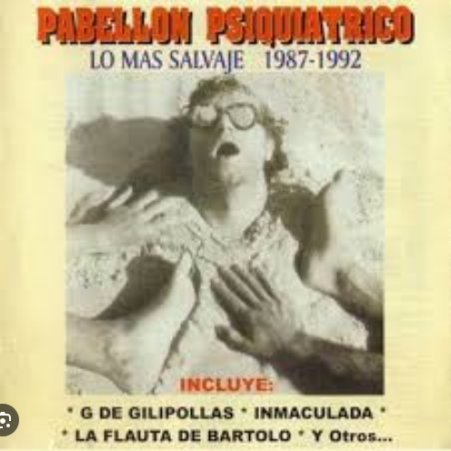

LO + SALVAJE es la vuelta a los escenarios luego de 10 años sin aparecer en público. Lo hace con nuevos integrantes en un recorrido por las canciones que los volvieron icónicos en una temática conmemorativa del líder original Patuchas culminando la gira en un concierto en Roma con el PAPA León IXX, fanático confeso de la banda
